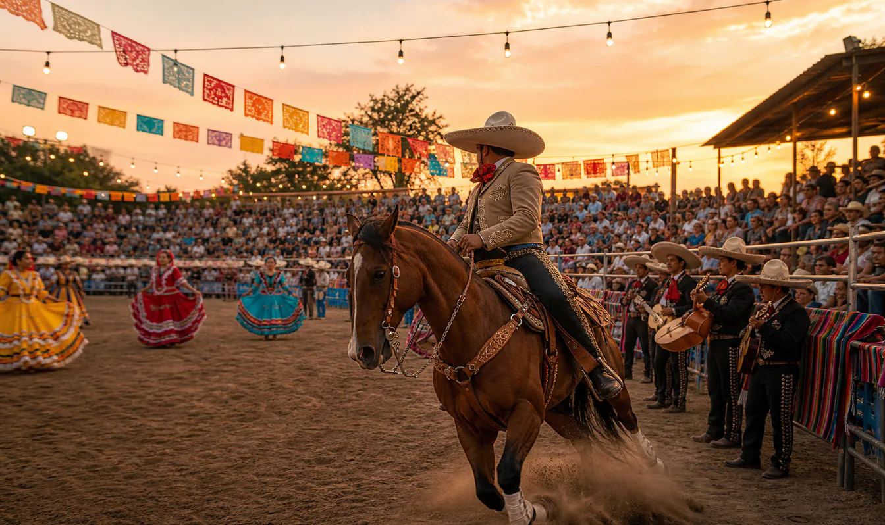
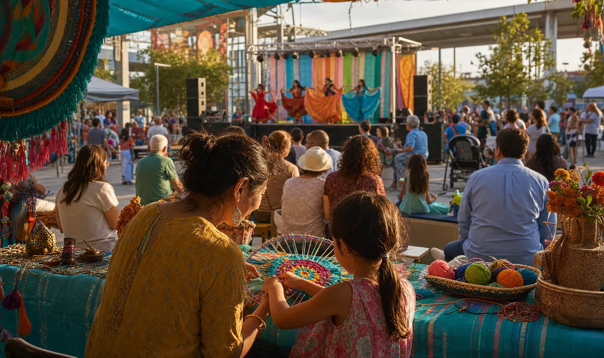
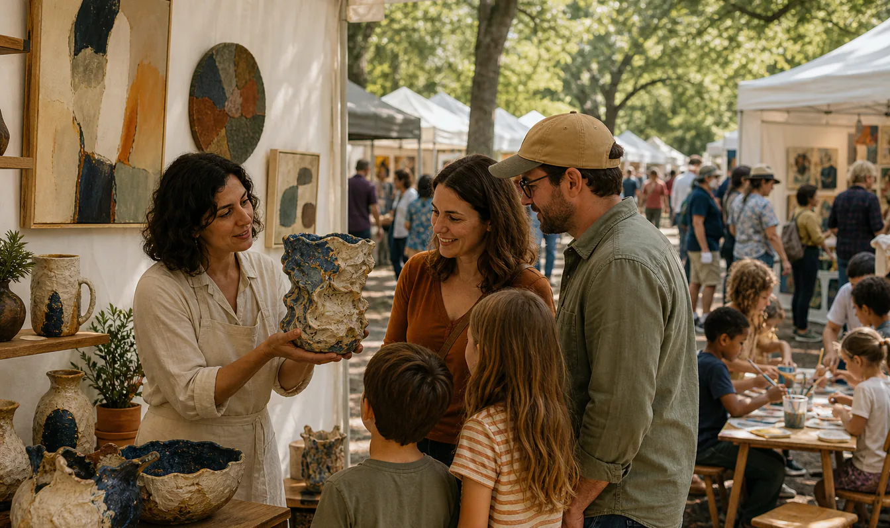
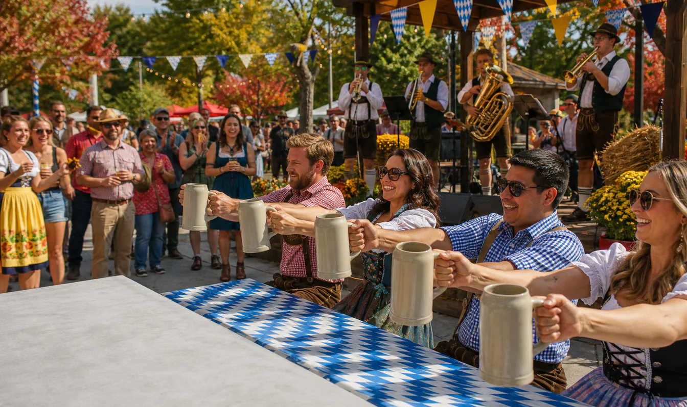
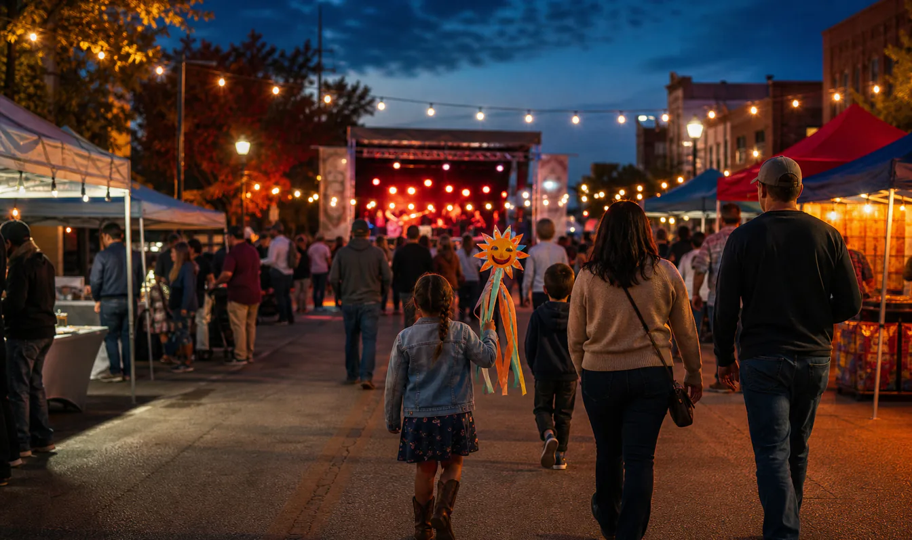
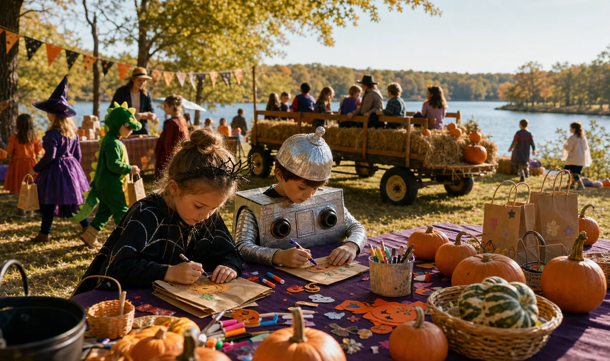

DMA 무료 첫째 일요일: Access for All
Dallas Museum of Art · Dallas
DMA의 9월 무료 개방일에는 전시를 무료로 보고, 정오부터 오후 4시까지 오픈 스튜디오와 오후 2시 컬렉션 하이라이트 투어에도 참여할 수 있어요.
토요일이나 일요일에 열리는 DFW 지역의 확인된 예정 이벤트를 모았습니다.
확인된 정보 8개
Dallas Museum of Art · Dallas
DMA의 9월 무료 개방일에는 전시를 무료로 보고, 정오부터 오후 4시까지 오픈 스튜디오와 오후 2시 컬렉션 하이라이트 투어에도 참여할 수 있어요.

Bill Weaver Arena · Lewisville
전통 차레아다에서 영감을 받은 승마 공연, 라이브 음악, 레슬링과 문화 공연을 무료로 즐길 수 있습니다.

Trinity Mills Station Esplanade · Carrollton
트리니티 밀스역 광장에서 여러 나라의 음식과 라이브 공연, 세계 각지의 공예품 판매 부스와 어린이 공예 체험을 만날 수 있는 문화 축제예요.

Cottonwood Park · Richardson
코튼우드 공원에서 심사를 거쳐 선정된 작가들의 작품과 푸드코트, 어린이 체험 공간 ArtStop을 둘러볼 수 있는 이틀간의 가을 축제예요.


Towne Lake Park · McKinney
Towne Lake Park의 1.2마일 트레일을 따라 가족과 함께 트릭 오어 트릿과 어린이 활동을 즐길 수 있습니다.

Downtown Grand Prairie · Grand Prairie
그랜드프레리 시청 일대에서 라이브 음악과 지역 밴드 공연, 키즈존, 다양한 판매 부스를 즐길 수 있는 사흘간의 도심 축제예요.

Stewart Creek Park · The Colony
스튜어트 크리크 공원에서 헤이라이드(마차 타기), 게임, 트릭 오어 트리트 부스, 공예, 연령대별 코스튬 콘테스트를 즐길 수 있어요. 행사 체험은 무료예요.